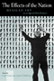
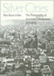
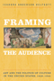
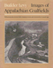
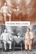
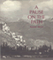
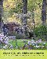
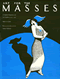

|
Suffering and Sunset
World War I in the Art and Life of Horace Pippin
Bernier, Celeste-Marie
New in Paperback!
552 pp • 6.125x9.25 • Fall 2017
paper 978-1-4399-1274-4
cloth 978-1-4399-1273-7 |

|
Pastoral
Inventions
Rural Life in Nineteenth-Century American Art and Culture
Burns, Sarah
392 pp • 9x7.5 • Spring 1989
cloth 978-0-87722-580-5 |

|
You
Are My Darling Zita
Busch, Glenn
304 pp • Fall 1991
cloth 978-0-87722-791-5
|

|
Bernard
Berenson and the Twentieth Century
Calo, Mary Ann
288 pp • 5.5x8.25 • Fall 1993
paper 978-1-56639-117-7
cloth 978-1-56639-116-0
|

|
The Asian American Avant-Garde
Universalist Aspirations in Modernist Literature and Art
Clark, Audrey Wu
246 pp • 6x9 • Fall 2015
paper 978-1-4399-1227-0
cloth 978-1-4399-1226-3 |

|
Mind's
Eye, Mind's Truth
FSA Photography Reconsidered
Curtis, James
160 pp • 9x10 • Fall 1989
paper 978-0-87722-823-3
cloth 978-0-87722-627-7 |

|
The
Male Nude in Contemporary Photography
Davis, Melody D.
208 pp • 7x10 • Fall 1991
paper 978-1-56639-198-6
cloth 978-0-87722-839-4 |

|
Philadelphia
Finding the Hidden City
Elliott, Joseph E. B., Nathaniel Popkin, and Peter Woodall
200 pp • 7.875 x 10.5 • Fall 2017
cloth 978-1-4399-1300-0 |
|
Perceiving
Artworks
Fisher, John
Fall 1980
cloth 0-87722-164-2
EAN 978-0-87722-164-7 |

|
She's Got a Gun
Floyd, Nancy
256 pp • 7x10 • Fall 2007
paper 978-1-59213-155-6
cloth 978-1-59213-154-9
|

|
To The City
Urban Photographs of the New Deal
Foulkes, Julia L.
142 pp • 6x9 • Fall 2010
paper 978-1-59213-998-9
cloth 978-1-59213-997-2
|

|
Fire
on the Earth
Anselm Kiefer and the Postmodern World
Gilmour, John C.
272 pp • Spring 1990
paper 978-0-87722-962-9
cloth 978-0-87722-690-1 |
 |
Philadelphia Mural Arts @ 30
edited by Golden, Jane and David Updike
208 pp • 10x8 • Spring 2014
cloth 978-1-4399-1131-0 |

|
Philadelphia
Murals and the Stories They Tell
Golden, Jane, Robin Rice and Monica Yant Kinney, photographs
by David Graham and Jack Ramsdale
160 pp • 9x11 • Fall 2002
cloth 978-1-56639-951-7
|

|
More
Philadelphia Murals and the Stories They Tell
Golden, Jane, Robin Rice and Natalie Pompilio, photographs
by David Graham and Jack Ramsdale
160 pp • 9x11 • Fall 2006
cloth 978-1-59213-527-1
|
 |
The
Effects of the Nation
Mexican Art in an Age of Globalization
edited by Good, Carl and John V. Waldron
232 pp • 6x9 • Spring 2001
paper 978-1-56639-866-4
cloth 978-1-56639-865-7
|

|
Andy
Warhol's Blow Job
Grundmann, Roy
240 pp • 7x10 • Fall 2002
paper 978-1-56639-972-2
cloth 978-1-56639-971-5
|
 |
Silver
Cities
The Photography of American Urbanization, 1839-1915
Hales, Peter Bacon
315 pp • Fall 1983
paper 978-0-87722-399-3
cloth 978-0-87722-299-6 |

|
William
Henry Jackson and the Transformation of the American Landscape
Hales, Peter B.
368 pp • 11x8.5 • Spring 1988
paper 978-1-56639-463-5
cloth 978-0-87722-478-5 |

|
Dust
to Dust
A Doctor's View of Famine in Africa
Heiden, David
224 pp • 7.5x10 • Spring 1992
cloth 978-0-87722-912-4 |

|
Framing the Audience
Art and the Politics of Culture in the United States, 1929-1945
Helfgott, Isadora Anderson
326 pp • 6x9 • Fall 2015
paper 978-1-4399-1178-5
cloth 978-1-4399-1177-8 |

|
Bass
Line
The Stories and Photographs of Milt Hinton
Hinton, Milt and David G. Berger
328 pp • 10.5x9.5 • Fall 1988
paper 978-0-87722-681-9
cloth 978-0-87722-518-8
|

|
Feedback
The Video Data Bank Catalog of Video Art and Artist Interviews
edited by Horsfield, Kate and Lucas Hilderbrand
360 pp • 8.5x11 • Fall 2005
cloth 978-1-59213-182-2
|

|
Pictures from a Drawer
Prison and the Art of Portraiture
Jackson, Bruce
192 pp • 7x10 • Spring 2009
paper 978-1-59213-949-1
cloth 978-1-59213-948-4<
|

|
The
Sons and Daughters of Los
Culture and Community in L.A.
edited by James, David E.
264 pp • 7x10 • Spring 2003
paper 978-1-59213-013-9
cloth 978-1-59213-012-2
|
|
Polka
Happiness
Keil, Charles, Angeliki V. Keil and Dick Blau
288 pp • 8x10 • Fall 1992
paper 978-1-56639-462-8
cloth 978-0-87722-819-6 |
|
Letters
of Charles Demuth, American Artist, 1883-1935
edited by Kellner, Bruce
216 pp • 5.5x8.25 • Spring 2000
paper 978-1-56639-781-0
cloth 978-1-56639-780-3
|

|
Life, Liberty, and the Mummers
Kennedy III, E. A.
192 pp • 8.5x11 • Fall 2007
cloth 978-1-59213-588-2<
|

|
Life's
America
Family and Nation in Postwar Photojournalism
Kozol, Wendy
232 pp • 8.5x11 • Spring 1994
paper 978-1-56639-221-1
cloth 978-1-56639-152-8 |
 |
Art, Politics, and Development
How Linear Perspective Shaped Policies in the Western World
Lepenies, Philipp H.
214 pp • 6x9 • Fall 2013
cloth 978-1-4399-1084-9
|
 |
Images
of Appalachian Coalfields
Levy, Builder, introduction by Helen Matthews Lewis, foreword
by Cornell Capa
144 pp • 8x10 • Spring 1989
cloth 978-0-87722-588-1 |
|
My Soul's Been Psychedelicized
Electric Factory: Four Decades in Posters and Photographs
Magid, Larry with Robert Huber
200 pp • 10x12 • Spring 2011
cloth 978-1-4399-0180-9 |

|
Philadelphia's Cultural Landscape
The Sartain Family Legacy
edited by Martinez, Katharine and Page Talbott
211 pp • 8.5x11 • Fall 2000
cloth 978-1-56639-791-9
|
 |
Kongo Graphic Writing and Other Narratives of the Sign
Martínez-Ruiz, Bárbaro
240 pp • 7x10 • Spring 2013
cloth 978-1-4399-0816-7 |

|
Twentieth
Century Limited
Industrial Design in America, 1925-1939
Meikle, Jeffrey L.
Second Edition
264 pp • 7x10 • Spring 2001
paper 978-1-56639-893-0
cloth 978-1-56639-892-3
|

|
Philadelphia
Stories
A Photographic History, 1920-1960
Miller, Fredric M., Morris J. Vogel and Allen F. Davis
319 pp • 8x10 • Fall 1988
cloth 978-0-87722-551-5 |

|
Still
Philadelphia
A Photographic History, 1890-1940
Miller, Fredric M., Morris J. Vogel and Allen F. Davis
312 pp • 8x10 • Spring 1983
cloth 978-0-87722-306-1 |

|
Orixás
Os Deuses Vivos da �frica
Orishas
The Living Gods of Africa in Brazil
do Nascimento, Abdias, foreword by Molefi Kete Asante
170 pp • 10x11 • Fall 1997
cloth 978-85-85853-013 |

|
Reframings
New American Feminist Photographies
edited by Neumaier, Diane, foreword by Anne Wilkes Tucker
336 pp • 8.5x10 • Fall 1995
paper 978-1-56639-332-4
cloth 978-1-56639-331-7
|
 |
Picturing Model Citizens
Civility in Asian American Visual Culture
Phu, Thy
218 pp • 6.125x9.25 • Spring 2012
paper 978-1-4399-0721-4
cloth 978-1-4399-0720-7
|

|
Journey
to a Far Place
Autobiographical Reflections
Quinney, Richard
152 pp • 8x10 • Fall 1990
cloth 978-0-87722-725-0
|
 |
A
Pause on the Path
Silvers, Ronald
208 pp • Fall 1988
cloth 978-0-87722-559-1 |
 |
Dangerous
Knowledge
The JFK Assassination in Art and Film
With a New Preface by the Author
Simon,
Art
298 pp • 5.25x9 • Spring 2013
paper 978-1-4399-1044-3
|

|
The
Homoerotic Photography of Carl Van Vechten
Public Face, Private Thoughts
Smalls, James
240 pp • 7x10 • Spring 2006
cloth 978-1-59213-305-5<
|

|
I
Can't Remember
Family Stories of Alzheimer's Disease
Smoller, Esther Strauss, foreword by Kathleen O'Brien
136 pp • 7x10 • Fall 1997
cloth 978-1-56639-555-7
|

|
Incurably
Romantic
Stehle, Bernard F., afterword by Joseph Schneider
256 pp • Spring 1985
cloth 978-0-87722-307-8 |

|
Swing
Era New York
The Jazz Photographs of Charles Peterson
Stokes, W. Royal, photographs by Don Peterson, foreword by Stanley
Dance
232 pp • 10x8 • Fall 1994
paper 978-1-56639-464-2
cloth 978-1-56639-227-3 |

|
No
Easy Walk
Newark, 1980-1993
Stummer, Helen M.
160 pp • 7x10 • Fall 1994
paper 978-1-56639-243-3
cloth 978-1-56639-242-6 |

|
Risking Life and Lens
A Photographic Memoir
Stummer, Helen M.
254 pp • 6x9 • Fall 2016
paper 978-1-4399-1457-1
cloth 978-1-4399-1456-4
|
|  |
The Magic of Children's Gardens
Inspiring Through Creative Design
Tai, Lolly, with a Foreword by Jane L. Taylor
376 pp • 8x10 • Spring 2017
cloth 978-1-4399-1447-2
|

|
In
The Place To Be
Guy Trebay's New York
Trebay, Guy, photographs by Sylvia Plachy
384 pp • 5.5x8.5 • Fall 1994
paper 978-1-56639-208-2
cloth 978-1-56639-278-5 |

|
The
Black Female Body
A Photographic History
Willis, Deborah and Carla Williams
240 pp • 9x12 • Fall 2001
cloth 978-1-56639-928-9
|
 |
Envisioning Emancipation
Black Americans and the End of Slavery
Willis, Deborah and Barbara Krauthamer
New in Paperback!
240 pp • 7x10 • Spring 2017
paper 978-1-4399-0986-7
cloth 978-1-4399-0985-0
|

|
Phantom Skies and Shifting Ground
Landscape, Culture, and Rephotography in Eadweard Muybridge's Lost Illustrations of Central America
Wolfe, Byron and Scott Brady 228
pp • 6x9 • Spring 2017
cloth 978-1-942185-14-7
|
 |
Art
for The Masses
A Radical Magazine and Its Graphics, 1911-1917
Zurier, Rebecca, introduction by Leslie Fishbein
240 pp • 9.25x12 • Fall 1987
paper 978-0-87722-670-3
cloth 978-0-87722-513-3 |